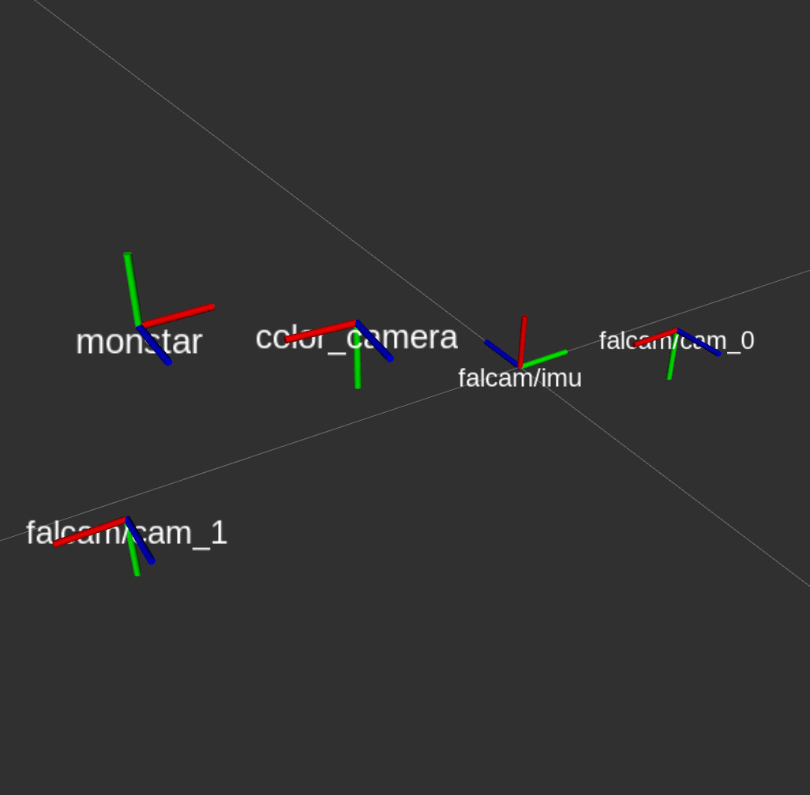
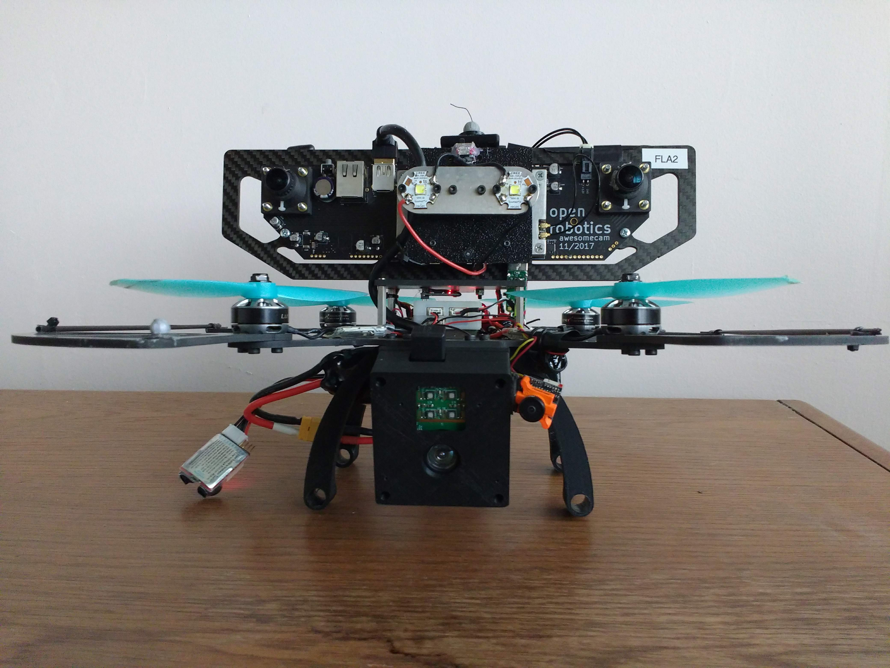
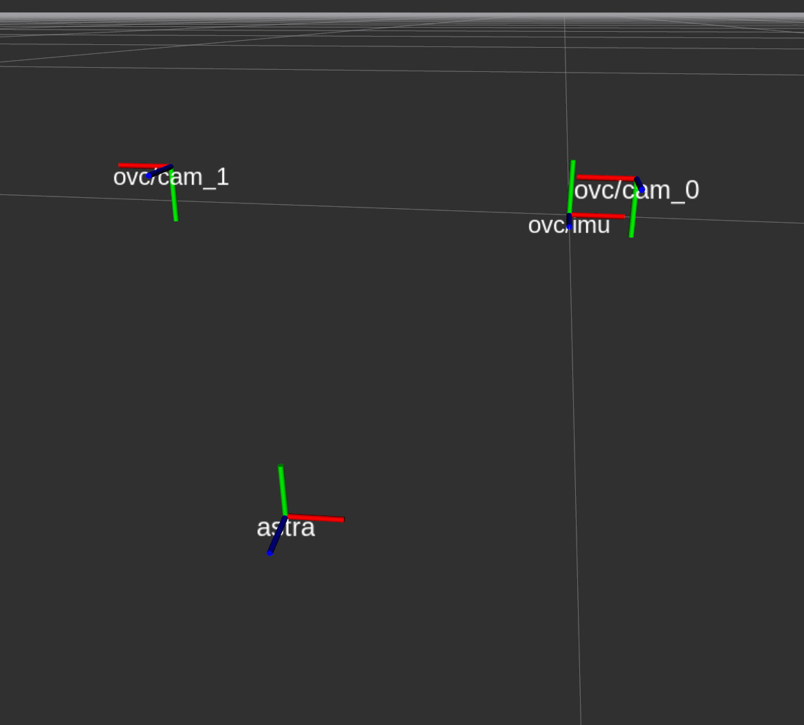
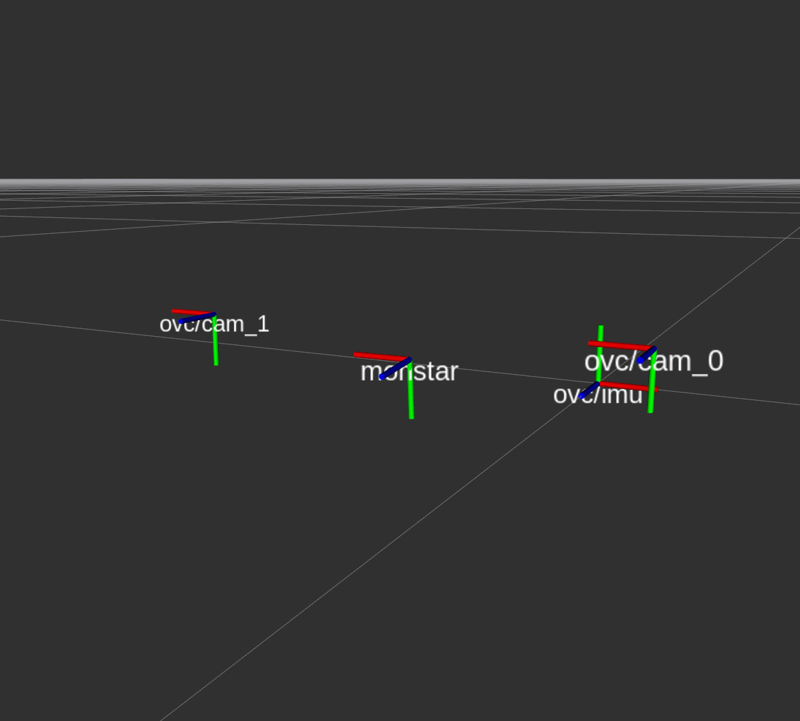
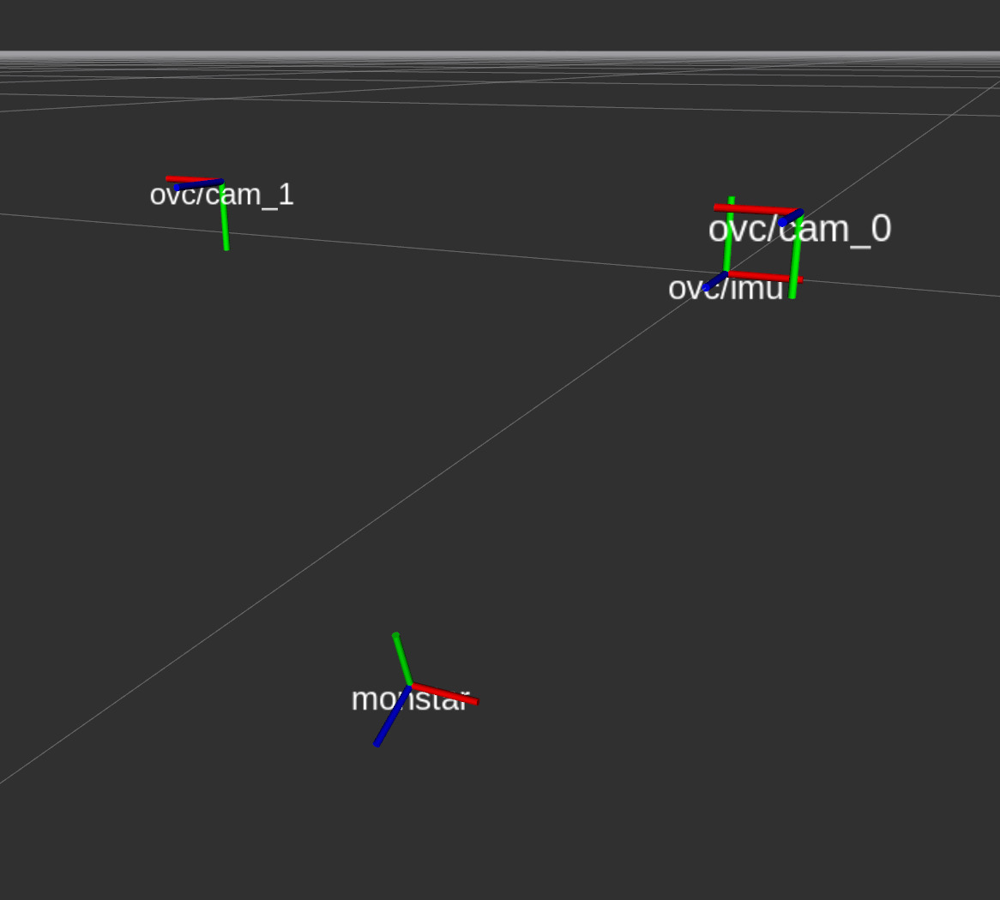

Sensor Rigs
Falcam Rig
Overview
For the earlier sequences in the data set, an experimental rig was
built, held together by double sided tape and zip ties. Here is a
picture of the rig, and how the axis of the various sensors are oriented.

|
 |
Sensor details
- Falcam aka
OVC 0/HarleyTandem
(at the bottom): a trinocular camera
with IMU. This experimental device was developed
by OpenRobotics under the
DARPA Fast Lightweight Autonomy (FLA) program.
Of the three cameras, only the left and right most are used. IMU
and cameras are hardware synchronized. A custom FPGA runs
synchronized exposure control across both sensors.
- imaging
sensors: ON Python 1300,
monochrome CMOS global shutter
- resolution: 1280 x 1024
- lens: M12 2.8mm fish-eye lens, no IR filter
- field of view: 95.3deg horizontal, 82.6deg vertical
- frame rate: 20Hz
- exposure control: built-in on custom FPGA enabled, synchronized between
- left and right camera
- IMU: InertialSense uINS 2.2
- sampling rate: 200Hz
- imaging
sensors: ON Python 1300,
monochrome CMOS global shutter
- Color camera: PointGrey Chameleon CM3-U3-13Y3C-CS
This camera is not synchronized with the Falcam. sensor: ON Python 1300, color CMOS global shutter.
- resolution 1280 x 1024
- exposure control: PointGrey on-board enabled
- lens: M12 4mm fisheye with IR filter
- frame rate: 20Hz
- field of view: 75deg horizontal, 63.2deg vertical
- SDK: Flycap2 version 2.11.3.121
- Depth sensor: Monstar
Time-of-Flight sensor. Four powerful IR LEDs produce a flash of modulated light. The phase shift of the reflected light is measured to determine the time of flight and the distance. When operated at lower frequencies, the sensing distance increases. It is not synchronized with the Falcam.- resolution: 352 x 287
- field of view: 100deg horizontal, 85deg vertical
- measurement range: 0.5-6m
- frame rate: 5Hz or 10Hz
- exposure control: proprietary on-board enabled
- driver library version: libroyale-3.7.0.0-LINUX-x86-64Bit
Falcon 250 (hand carried)
Overview
This sensor suite is mounted on a Falcon 250 quad rotor. The core
piece is an integrated sensing device, the Open Vision Computer (OVC),
version 1. It consists of an NVidia TX2, modified to obtain camera
images directly via PCIe lanes from an FPGA that has two synchronized
stereo cameras and an IMU attached. For depth measurement, either a
Monstar ToF or an Astra RGBD sensor are mounted underneath the rotors. Two
forward facing LED lights are used for some of the recorded sequences.

|
 |
While the OVC remained in the same position, the Monstar was either
affixed above (where the LEDs are) or below the propellers, and in different orientation:
| Configuration 1, with Astra camera | Configuration 2, with Monstar above propellers | Configuration 3, with Monstar below propellers |
|  |  |  |
Sensor details
Open Vision Computer (OVC) version 1
- imaging sensors:
ON Python 1300, monochrome CMOS global shutter
- resolution: 1280 x 1024
- lens: M12 2.8mm fish-eye lens, no IR filter
- field of view: 95.3deg horizontal, 82.6deg vertical
- frequency: 20Hz
- IMU: onboard VectorNav VN-100
NOTE: different IMU orientation than in the Falcam rig! - sampling rate: 200Hz
- imaging sensors:
ON Python 1300, monochrome CMOS global shutter
Depth sensor: Monstar
Time-of-Flight sensor. Four powerful IR LEDs produce a flash of modulated light. The phase shift of the reflected light is measured to determine the time of flight and the distance. When operated at lower frequencies, the sensing distance increases. It is not synchronized with the Falcam.- resolution: 352 x 287
- field of view: 100deg horizontal, 85deg vertical
- measurement range: 0.5-6m
- frame rate: 5Hz or 10Hz
- exposure control: proprietary on-board enabled
- driver library version: libroyale-3.11.0.0-LINUX-arm-64Bit
Depth sensor: Orbbec Astra
Structured light RGB-D sensor, similar to the Microsoft Kinect. It is not synchronized with the Falcam.- resolution (depth image): 640 x 480
- field of view: 60deg horizontal, 49.5deg vertical
- measurement range: 0.6-8m
- frame rate: 10Hz
- exposure control: proprietary on-board enabled
- driver library: OpenNI with ROS driver